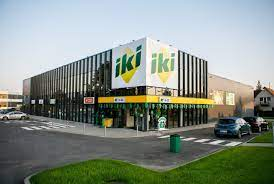

Apie mus
Mūsų prekybos tinklas įsteigė daug parduotuvių ir pristatė naujus jų formatus – pavyzdžiui, IKI EXPRESS. Tapome pirkėjų lojalumo programos pradininkais, taip pat išleidome privačius prekių ženklus ir pirmieji įdiegėme savitarnos kasas. Taip netrukus tapome didžiausiu pagal turimų parduotuvių skaičių mažmeninės prekybos tinklu Lietuvoje.
Nors nuo tada, kai atvėrėme pirmosios tinklo parduotuvės duris, daug kas pasikeitė ir patobulėjo, IKI ištakos bei tapatumas liko tokie patys: mes žinome, kas yra geras maistas, suprantame, ko nori ir ką renkasi lietuviai, kruopščiai ir kompetentingai atrenkame, paruošiame geriausią, šviežiausią maistą ir kokybiškai aptarnaujame klientus.
Mūsų prekybos tinklas įsteigė daug parduotuvių ir pristatė naujus jų formatus – pavyzdžiui, IKI EXPRESS. Tapome pirkėjų lojalumo programos pradininkais, taip pat išleidome privačius prekių ženklus ir pirmieji įdiegėme savitarnos kasas. Taip netrukus tapome didžiausiu pagal turimų parduotuvių skaičių mažmeninės prekybos tinklu Lietuvoje.
Nors nuo tada, kai atvėrėme pirmosios tinklo parduotuvės duris, daug kas pasikeitė ir patobulėjo, IKI ištakos bei tapatumas liko tokie patys: mes žinome, kas yra geras maistas, suprantame, ko nori ir ką renkasi lietuviai, kruopščiai ir kompetentingai atrenkame, paruošiame geriausią, šviežiausią maistą ir kokybiškai aptarnaujame klientus.